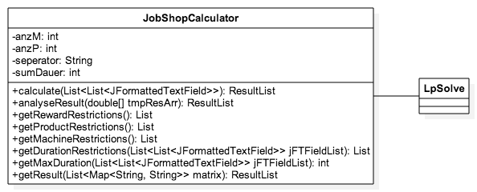

Die
Klasse JobShopCalculator

Die Klasse
JobShopCalculator überführt nun die Benutzereingabe in ein
LP-Modell. Dabei werden folgende Restriktionen durch entsprechende
Methodenaufrufe erstellt:
- getDurationRestriction(List<List<JFormattedTextField>>jFTFieldList):Jedes
Produkt muss innerhalb der Gesamtdurchlaufzeit abgearbeitet werden.
Jedes Produkt hat so viel Variablen wie die Gesamtdurchlaufzeit
beträgt. Natürlich wird aufgrund zeitlicher Grenzen des Produkts
nicht der gesamte Variablenbereich benutzt.
- getMachineRestriction(): Jede Maschine kann pro Zeiteinheit
immer nur 0 oder 1 Produkt bearbeiten.
- getMaxDuration(): Ermittelt die Gesamtdurchlaufzeit, in
welcher die Produkte abgearbeitet werden müssen und gibt diese als
Summe zurück. Diese ist notwendig um die Gesamtanzahl der benötigten
Strukturvariablen als auch der benötigten Restriktionen zu
ermitteln.
- getProductRestriction(): Ein Produkt kann pro Zeiteinheit
immer nur von 1 Maschine bearbeitet werden.
- getRewardRestriction(): Die Produkte sollen möglichst an
einem Stückbearbeitet werden. Dadurch soll ein ständiger Wechsel auf
den Maschinen in Hinblick auf potenziell anfallende Rüstkosten
vermieden werden.
Anschließend
wird das zu lösende LP-Modell aus den einzelnen Restriktionslisten
durch calculate(List<JFormattedTextField>> jFTFieldList)
zusammengebaut, an den Solver übergeben, gelöst und das Ergebnis
als Result zurückgegeben